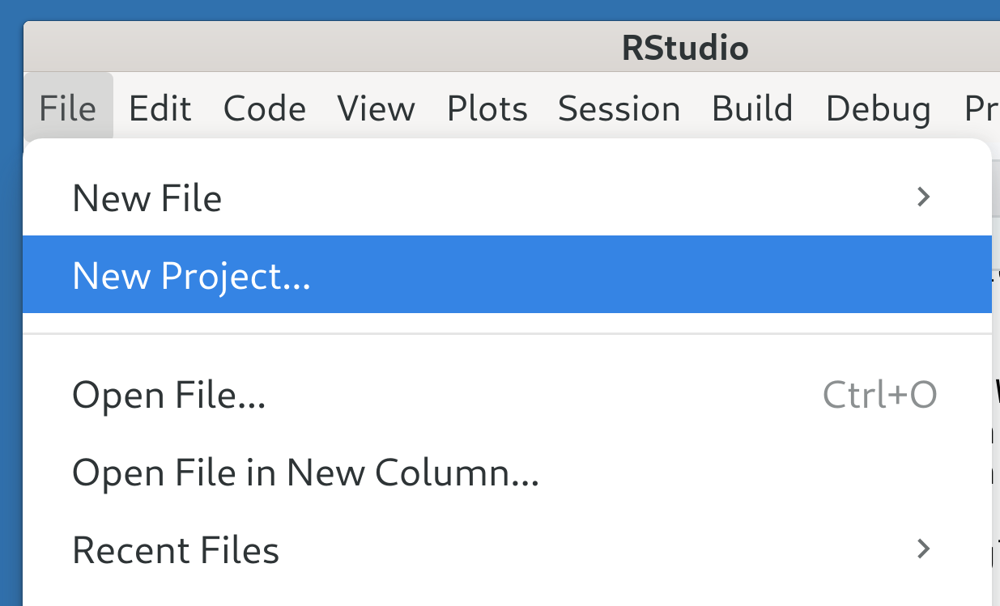
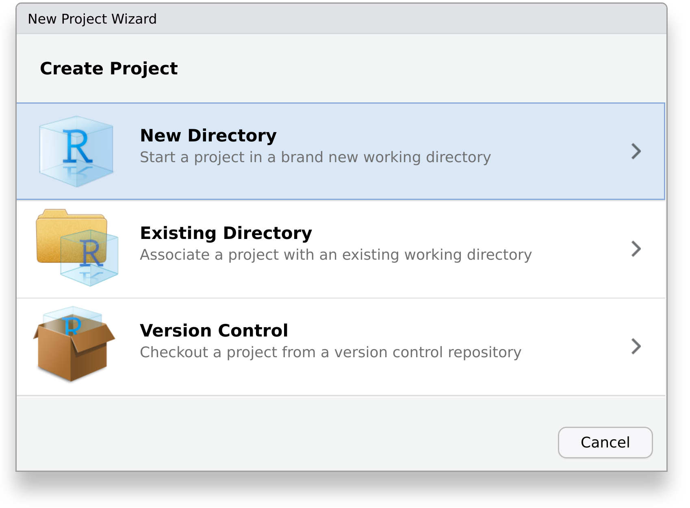
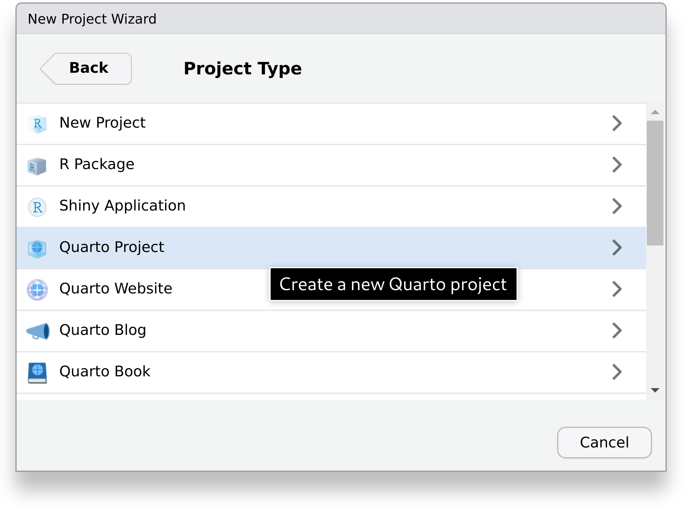
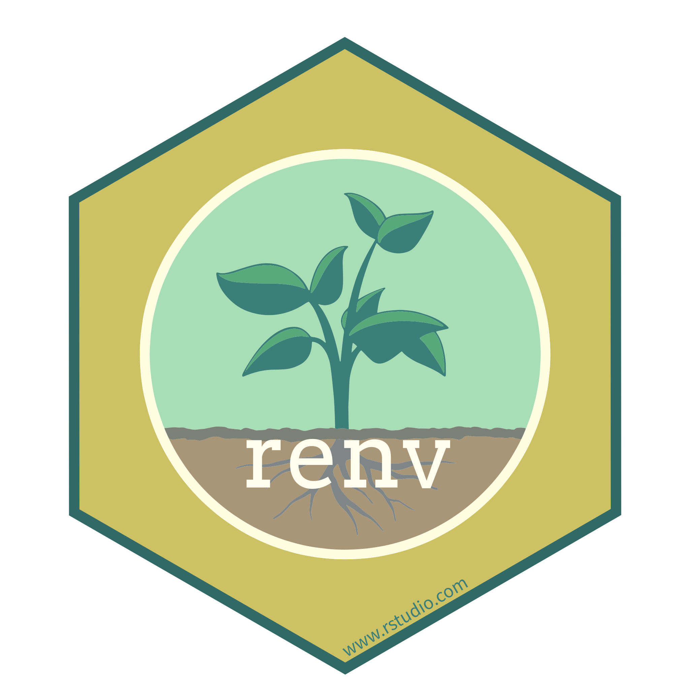
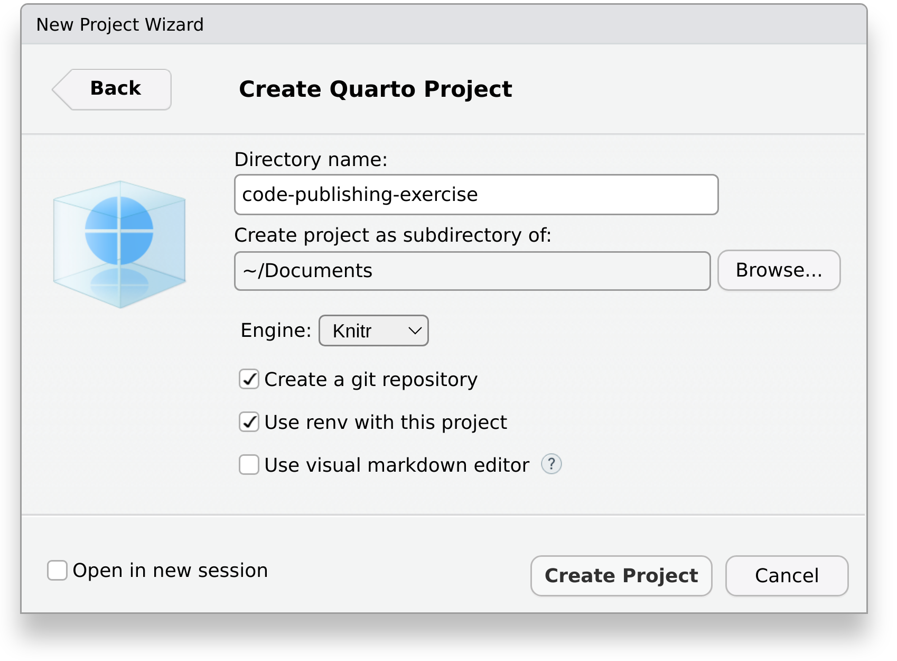

Project Setup
We will start by setting up a simple example of a reproducible report.
Create Quarto Project
First, we will need to create a new Quarto project.
If you haven’t already, open RStudio – see Note 1 for how to use the terminal instead. Then, click on File > New Project… to open the New Project Wizard.

Here, select New Directory

And choose the project type Quarto Project.

Finally, enter the name of the directory where our report will be created in, for example code-publishing-exercise.
As we will use Git to track the version history of files, be sure to check Create a git repository. If you don’t know what Git is, have a look at the tutorial “Introduction to version control with git and GitHub within RStudio”.

Also, we will utilize the package renv to track the R packages our project depends on. Using it makes it easier for others to view and obtain them at the exact same version at a later point in time. Therefore make sure that the box Use renv with this project is checked. If you are asked to install required packages, select Yes. Also, if this is the first time you are hearing about renv, have a look at the tutorial “Introduction to {renv}”.
If you are already familiar with Markdown and Quarto, you can uncheck the box Use visual markdown editor.

Click on Create Project. Your RStudio window should now look similar to this:

If, like in the image, a Quarto file with some demo content was opened automatically, you can close and delete it, for example, using RStudio’s file manager.
Throughout this tutorial, you will need to run both R code and system commands (primarily git and quarto). Within RStudio, R code can be run by going to the tab Console, while system commands are executed in the tab Terminal. We also indicate where to run your code directly above each code snippet. If no indication is given, the code is only for demonstration purposes and does not need to be run.
Make sure that your project is in a consistent state according to renv by running:
R Console
renv::status()If it reports packages that are not used, synchronize the lock file using:
R Console
renv::snapshot()You may need to confirm this renv command (and the ones to follow) by entering Y.
Always run renv::status() and resolve any inconsistencies before you commit code to your project. This way, every commit represents a working state of your project.
Without RStudio, one can create a Quarto project with version control and renv enabled by typing the following into a terminal:
Terminal
quarto create project default code-publishing-exercise
cd code-publishing-exercise/
rm code-publishing-exercise.qmd
git init
git checkout -b mainThen, one can open an R session by simply typing R into the terminal. Next, make sure that getwd() indicates that the working directory is code-publishing-exercise. Now, initialize renv:
R Console
renv::init()You are now ready to stage and commit your files. You can either stage files separately or the whole project folder at once. If you do the latter, we recommend you to inspect the untracked changes before staging all of them:
In file paths, a period (.) means “the current directory”, while two periods (..) mean “the parent directory”. Therefore git add . means “stage the current directory for committing”.
Terminal
git statusSince no commits have been made so far, this should include every file that is not covered by the .gitignore file. If everything can be staged for committing – as is the case in this tutorial – you can follow up with:
Terminal
git add .
git commit -m "Initial commit"If you see a file you’d rather not commit, delete it or add its name to the .gitignore file. If you don’t check your changes before committing, you might accidentally commit something you’d rather not.
Decide on Structure
Before adding your project files, it is helpful to decide on a folder structure, that is, how to call each file and where to put it. In general, the folder structure should facilitate understanding a project by breaking it into logical chunks. There is no single best solution, as a good structure depends on where a project’s complexity lies. However, it is usually helpful if the different files and folders reflect the execution order. For example, if there are multiple data processing stages, one can possibly differentiate input (raw data), intermediate (processed data), and output files (e.g., figures) and put them into separate folders. Similarly, the corresponding code files (e.g., preparation, modeling, visualization) can be prefixed with increasing numbers.
Luckily, there are already numerous proposals for how to organize one’s project files, both general (e.g., Project TIER, 2021; Wilson et al., 2017) as well as specific to a particular programming language (e.g., Araya-Salas & Arriaga Madrigal, 2024; Marwick et al., 2018; Vuorre & Crump, 2021) or journal (Vilhuber, 2021). We recommend you to follow the standards of your field.
In this simple project, we will explore differences in bill length between male and female penguins. You can put all your files in the root folder of your project.
Add Manuscript
In order to get you started, we have prepared a manuscript for you, alongside a bibliography file. Download the two files to your computer and put them into your project folder.
Manuscript.qmd Bibliography.bib
The manuscript already contains the narrative, but the results are still missing. It will be your job to conduct the data analysis. For now, add yourself as a co-author in the YAML header of the manuscript:
Manuscript.qmd
- name: "Your name"
affiliation: "Your university"To create a PDF from the manuscript, you need to have a \(\TeX\) distribution installed on your computer. A lightweight choice is TinyTeX, which can be installed with Quarto as follows:
Terminal
quarto install tinytexYou should now be able to render the document using Quarto:
Terminal
quarto render Manuscript.qmdThis should create a PDF file called Manuscript.pdf in your project folder. Open it to verify that it includes your name as author.
You can now make your changes known to Git:
Terminal
git status
git add .
git commit -m "Add manuscript"You are now all set up to prepare your project folder for sharing!